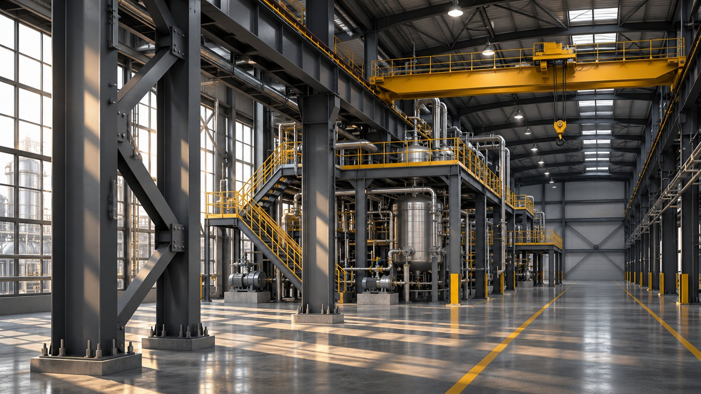
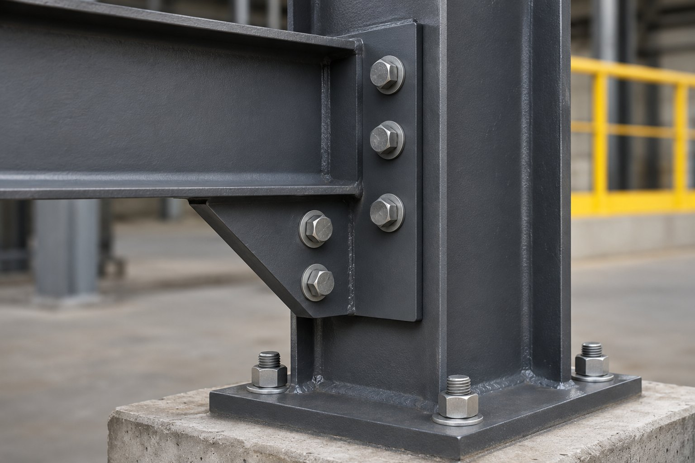
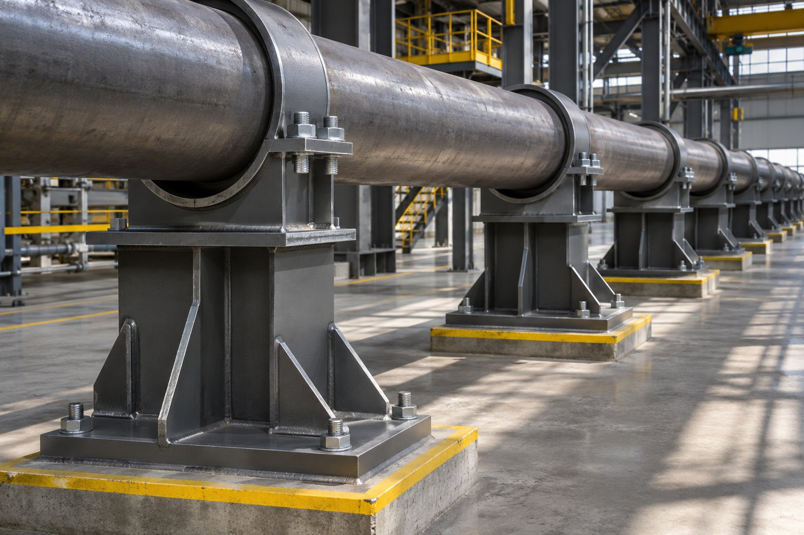

Монтаж технологических металлоконструкций на действующем предприятии.
Кто выполняет подготовку, подъём и восстановление покрытия?
Какие окна остановки и ограничения заложены в расчёт?
Кто предоставляет технику, материалы и временное питание?
Какими документами подтверждается завершение операции?

Пример — концепт для портфолио. Это плановая потребность, не сведения о штате подрядчика.

Замеры, ограничения и исходный акт.
Согласование организации работ и доступа.
Контроль операций и фиксация отклонений.
Исполнительная документация и акт приёмки.
Разбираем ведомость объёмов, ограничения площадки и критерии приёмки. Итогом становится сопоставимый состав предложения.
Окна доступа. Граница поставки материалов. Ответственность за подъёмную технику. Объём демонтажа. Порядок приёмки. Требуемые разрешительные документы.